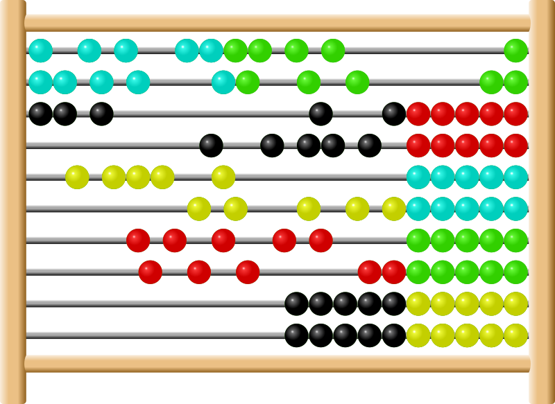

Live DevLog
| 06 Jan 2018 |
| 18:20:32 | BUG |  I cannot explain #8 I cannot explain #8
I'll issue it anyway... I hope this will not influence the game flow too negatively. Since combat is turn-based, and since I hate timed missions, it may not be too much trouble, but it can be bothersome. |
| 17:56:16 | FIXED |  LoadMap = nil fixed LoadMap = nil fixed |
| 17:44:26 | FIXED | And another one :( |
| 17:43:45 | FIXED | case error |
| 17:42:26 | DEBUG |  Crash Crash |
| 17:39:36 | ACHIEVEMENT | I've set up the achievements for finishing the game on all three difficulty modes, but I will do this properly linked to the game later. |
| 17:37:25 | SITE |  Added tag ACHIEVEMENT Added tag ACHIEVEMENT |
| 16:48:54 | KTHURA |  That is the Kthura for Ryanna.... (as the 'real' Kthura could already do this)... :P That is the Kthura for Ryanna.... (as the 'real' Kthura could already do this)... :P |
| 16:48:28 | KTHURA | Adaptions to Kthura to make it able to read from JCR |
| 16:42:46 | STUDY | Well some more study into the Lua language brouth me some solutions to problems I never held possible to solve :) |
| 15:57:33 | ANNA | It works as far as I can see it for now.... Later inspection will have to fully confirm this. |
| 15:56:20 | ANNA | Code done |
| 15:37:03 | ANNA | Volgende patiënt --> Anna! |
| 15:36:50 | STATUS |  Well that took some time to do.... :( Well that took some time to do.... :( |
| 15:35:37 | GAMEJOLT |  GameJolt logins appear to be working now GameJolt logins appear to be working now |
| 14:41:38 | FAILURE |  Eclipse crashed Eclipse crashed |
| 14:04:31 | ANNA | Record created |
| 13:40:08 | COCKROACH |  The GJ API keeps claiming it got 'nil' for the user token... This is an impossibility, but the API keeps on this very tight! The GJ API keeps claiming it got 'nil' for the user token... This is an impossibility, but the API keeps on this very tight! |
| 13:11:39 | GAMEJOLT | Game Jolt Login routines set up, although I fear I forgot something here XD |
| 12:53:03 | SCRIPT |  I've set up an alternate error an assertion system. I've set up an alternate error an assertion system.
No I've nothing against the Blue Screen of Death that "LÖVE" itself provides and for true Lua errors it's prefect due to its traceback system. However, some game errors are not caused by true Lua code, and then the error is also not caused by data the default Blue Screen Of Death can provide, and my own error system can also output the data that is fully needed then, as that is mostly pretty specific to that data. That's all. |
| 12:51:06 | CYNTHIA | Italy level 1 |
| 05 Jan 2018 |
| 23:31:17 | BACKUP |  Xtra Backup Running Xtra Backup Running |
| 23:29:32 | LUA |  Added the JSON parser to my libs, as the GJ API needs it Added the JSON parser to my libs, as the GJ API needs it |
| 23:24:58 | GAMEJOLT | And it's a nice way to kill your mind, I tell ya! |
| 23:18:31 | GAMEJOLT | Spammer kicking.... Yeah that too has to go on... Sorry |
| 22:33:03 | CONFIRMED |  Does what it has to do... for now ;) Does what it has to do... for now ;) |
| 22:26:54 | DONE |  Chain to the game initiator, although a crash will be caused as this routine does not yet exist Chain to the game initiator, although a crash will be caused as this routine does not yet exist |
| 22:26:27 | GAMEJOLT | Gamejolt data sent into the game |
| 22:26:20 | ANNA | login sent into the game |
| 21:42:54 | FIXED | Right that issue is now fixed. |
| 21:42:05 | BUG | I'm not sure why it follows the mouse pointer in height, though |
| 21:41:49 | SCRIPT | Brought the arrow in |
| 21:38:33 | ART |  Arrow for 'next' page in the nextwork config, which is also the arrow that will start the game itself. Arrow for 'next' page in the nextwork config, which is also the arrow that will start the game itself. |
| 21:00:02 | NOTE |  Although that also revives issue #7 (sigh) Although that also revives issue #7 (sigh) |
| 20:59:37 | FIXED | that |
| 20:31:03 | CONFIRMED | Yup, indeed, the test build does not take pre-made JCR files into account.... I need to see if I can fix that up. |
| 20:28:41 | DEBUG | I think I found out why this happens :-/ |
| 20:16:32 | BUG | Bundles not recognized as such. This is because the directory detection does not work the way it should |
| 19:35:38 | SCRIPT | A 'silly routine' written that will be used to allow Ryanna to break the fourth wall when Ryanna calls the OS you are using 'cheap'. |
| 19:25:05 | NOTE | As the boxtext processor and routine has not yet been written, nothing will happen due to that, but at least I can now show it immediately once that part works. |
| 19:22:47 | SCENARIO |  The game's start scenario has now been written The game's start scenario has now been written |
| 18:43:55 | JUDGMENT | That appears to be working... Good |
| 18:38:19 | CONFIG |  I've now configured my scenario tool, I have not yet tested if this works the way it should though. I've now configured my scenario tool, I have not yet tested if this works the way it should though. |
| 18:29:31 | SITE | Added tag SCENARIO |
| 17:43:17 | MAP | The graves have been put onto the map |
| 17:28:45 | ART | Ryanna's Grave |
| 15:37:18 | WINDOWS |  And the Windows version is also up to date.... Yeah Windows beats Linux.... Sorry Linux geeks, but you'll have to accept the facts!!! And the Windows version is also up to date.... Yeah Windows beats Linux.... Sorry Linux geeks, but you'll have to accept the facts!!! |
| 15:24:59 | LINUX |  Well I'm stull working in Linux, I might as well, have a great software update Well I'm stull working in Linux, I might as well, have a great software update |
| 15:19:25 | LINUX | JCRX updated for Linux, but since none of the Google Drive clients appear to be working in Manjaro (I can install them only to cause the system to say they don't exist after installation), I'll need to transfer it to my Mac manually.... GRRR! |
| 15:02:53 | LINUX | ANd once again I am reminded of the FACTS that make me dislike Linux. Install a package. Installation succesful. Running it IN 100% accordance of the instruction manual --> Program not found! |
| 14:45:26 | OFFTOPIC |  As I couldn't use my computer anyway I decided to have a cup of coffee in the mean time. As I couldn't use my computer anyway I decided to have a cup of coffee in the mean time.
Yeah, well, I wanted some coffee anyway and this was the right moment, mind you? |
| 14:44:43 | SYSTEM |  System reboot complete System reboot complete |
| 13:57:18 | SYSTEM | In the mean time my back up is done, and that means I'll first restart my system.... Everything is going DOWN! |
| 13:55:09 | DONE | Code set up for the story events handler, but it's not yet tested, as I do need... tadaa.. event script for that which has yet to be written, but doncha worry about that, it will be done. |
| 12:52:21 | GITHUB |  In the meantime I will make sure all my Github repositories are up to date. If anything goes wrong i at least still have my source codes there :P In the meantime I will make sure all my Github repositories are up to date. If anything goes wrong i at least still have my source codes there :P |
| 12:51:42 | SYSTEM | Also, the file requestor of my mac has crashed again... I have a back up running now, but as soon as that backup is finished I will have to restart my mac, and this will slow down some stuff... |
| 12:51:06 | STATUS | My prime concern now is to get the introduction story at the graveyard to work, and to set up the savegame manager allowing me to skip all that crap. Some preparations are in order though. |
| 12:36:49 | CYNTHIA | Completed Germany and created the link to Norway and updated the itch.io download where the Germany puzzles are now playable too. |
| 01:01:21 | CONFIG | And some needed configuration changes to the back up tool. |
| 01:00:51 | BACKUP | Running |
| 00:13:22 | MAP | First start has been made for the Graveyard dungeon, where Ryanna starts the game. |
| 00:12:40 | SITE | Added tag MAP |
| 04 Jan 2018 |
| 23:46:30 | ART | Tree recycling.... Yeah, I know I should have some new trees, but I am not really blessed with a dedicated art designer at this moment, you know :( |
| 23:44:09 | BLITZMAX |  I've added compatibility in the Kthura engine for jpbf files -- This is gonna be really important when it comes to handling animations in levels I've added compatibility in the Kthura engine for jpbf files -- This is gonna be really important when it comes to handling animations in levels |
| 23:29:12 | ART | Texture recycle for 'Road' tiles |
| 23:09:38 | FIXED | Kthura causes no more crashes.... But that is only in the main compiling, as the true test for Kthura has yet to begin. |
| 23:09:08 | FIXED | Crashes in conditional compiling |
| 22:58:54 | FIXED | Prefix error in main code |
| 22:47:40 | STUDY | Hmm, maybe there is a way.... I think I got the idea of things now here... :-/ |
| 22:43:10 | STUDY | Right, study turned out that I can easy put in support for tiled areas in the Love version of Kthura, but a few things need to be taken in order.- First of all +1 in the BlitzMax version is -1 in the Love variant. Not that much of a problem, but when neglected it can have strange results.
- As I have to put in the coordinates on the quad's creation changing its insertion points is as far as I know now not possible, making the neat effects I used in TFT REVAMPED inmpossible. Think of the flowing water in the Sub. River (that was the magic of insert points changing) and also some other magic effects I used in several dungeons. Well I'm glad it's possible at all
|
| 22:31:47 | KTHURA | I think I've set the core right now, but if this works the way it should.... well.... We gotta see about that, I think... |
| 22:09:26 | STATUS | Next step.... Bring Kthura to Ryanna.... Wish me luck on that one, as Kthura is a complex routine, however most of it should be done already |
| 22:07:29 | CLOSED | #5 |
| 22:07:26 | DONE | #5 |
| 21:46:34 | FIXED | Lib error |
| 21:46:11 | FIXED | Forgotten music swap |
| 21:42:40 | FIXED | nil |
| 21:30:38 | FIXED | #6 but I must add the modified version to Ryanna |
| 21:30:22 | GITHUB | issued as #6 |
| 21:20:04 | BUG | JCRx not able to deal with quotations |
| 20:28:35 | LUA | Set up a simple music library for quick music access, and which is able to ignore the music if you are playing a non audio version of the game. |
| 20:13:11 | FIXED | Directory issue |
| 19:44:38 | OFFTOPIC | Ah, all last years entries are off my front page now :P |
| 19:42:22 | CONFIG | Extra configuration for my IDE |
| 19:30:14 | MUSIC |  Metalmania by Kevin McLeod has been chosen for regular boss fights Metalmania by Kevin McLeod has been chosen for regular boss fights |
| 19:26:17 | MUSIC | It's been decided: Angel Share, by Kevin McLeod will be the song used for the opening |
| 19:18:55 | MUSIC | Since Ryanna starts the game on a graveyard in the middle of the forest, it may be proper to use the piece I just downloaded there already, however that will require me to take care of the issue of aliasing.... Well, the sooner it's solved the better anyway, but first a good title tune... |
| 19:15:39 | CALCULATION | The formula deciding how much exp you need to gain a level is for now: neededexp = currentlevel3 |
| 19:14:41 | SITE | Added tag CALCULATION |
| 19:08:05 | MUSIC | And DewDrop Fantasy has been found, but not suitable for a title song, but it is for a forest location. |
| 18:57:42 | CLOSED | TrickyGameTools/Ryanna#3 |
| 18:57:35 | SITE | Added tag CLOSED |
| 18:57:13 | CONFIRMED | it is |
| 18:53:34 | RYANNA |  TrickyGameTools/Ryanna#3 should now be taken care of! TrickyGameTools/Ryanna#3 should now be taken care of! |
| 18:53:05 | GO |  And I've been working once more in Go And I've been working once more in Go |
| 18:37:52 | TODO |  Although I do see problem TrickyGameTools/Ryanna#16 Although I do see problem TrickyGameTools/Ryanna#16 |
| 18:35:32 | RYANNA | This however does allow me to prep up Ryanna for aliasing |
| 18:35:02 | MUSIC | Things always go odd. I was looking for a music piece for the title screen an I found a good piece for the final dungeon in stead. -- Jet Fueled Vixen -- By Kevin McLeod |
| 17:17:55 | GITHUB | The Lua exports will (for now) be shown in the repository, but they will be marked as being not free-licensed |
| 16:28:00 | KTHURA | A test map has succesfully been created |
| 16:24:13 | KTHURA | Base Script set up |
| 16:18:04 | KTHURA | I've set up the base script for the Kthura Map editor.
The easiest way to do that, is by cannibalizing existing scripts which is hereby done, with "The Fairy Tale REVAMPED" as template.
As LAURA II could reed directly from Kthura, I had to add an extra field in order to make Kthura export automatically into Lua format |
| 15:58:30 | UPDATED |  #4 #4 |
| 15:58:19 | DONE | Bundle created |
| 14:21:45 | BLITZMAX | Base config set up for tool that allows me to quickly convert BlitzMax animations into picture bundles |
| 14:07:02 | BLITZMAX | Yeah I am gonna need BlitzMax, but as this will only be for a tool I need for my own development purposes... Who freakin' cares |
| 14:06:32 | SITE | Added tag BLITZMAX |
| 13:59:49 | ART | Animation complete |
| 13:20:48 | ART | A bit more animation done on Ryanna |
| 13:12:02 | CYNTHIA | Cynthia Johnson is in a stage that it can be combined with any project, however some work is still required, and I will report about that in this DevLog, only not in as much detail as I would in the actual Cynthia Johnson Devlog ;) |
| 13:11:10 | CYNTHIA | Germany Puzzle 5 |
| 13:10:25 | SITE | Added tag CYNTHIA |
| 02:08:07 | CONFIG | Although some more configuration changes were needed here |
| 02:06:47 | BACKUP | Running |
| 00:56:38 | TODO | #5 |
| 00:54:43 | CHECKLIST | #4 |
| 00:40:58 | ART | Animation frame |
| 00:26:53 | GAMEJOLT | Log integrated in site Take a look |
| 00:21:13 | ART | Base Sprite Ryanna South |
| 00:05:06 | UPDATED | #1 |
| 00:05:03 | SITE | Added tag UPDATED |
| 03 Jan 2018 |
| 23:50:17 | FIXED | TrickyGameTools/Ryanna#11 |
| 23:40:19 | DONE | Added to Game Data |
| 23:30:41 | CHARACTER |  Set up the character level up database Set up the character level up database |
| 23:04:37 | STATUS | And now to come up with a cool "continue" button and we can start ;) |
| 23:04:01 | CONFIRMED | it works |
| 22:57:48 | FIXED | And I fixed it! |
| 22:57:44 | STUPIDITY |  Well I now know why that is Well I now know why that is |
| 22:57:10 | DONE | I've set the link but it appears to be ignored |
| 22:46:43 | ANNA | The Anna creation call has been set up, now I need to link the game toit. |
| 21:50:39 | NOTE | This has not yet been tested though |
| 21:50:19 | ANNA | The Anna Routines should now be adapted for use in Ryanna. |
| 20:35:34 | GITHUB | All work so far pushed |
| 20:32:25 | NOTE | For security reasons I've blocked the single quote and double quote out of the system. |
| 20:32:05 | DONE | backspace works |
| 20:27:57 | NOTE | if the game could ever run on mobile devices, the fake-virtual keyboard should be supported, but how to call or hide it, is something I don't know. |
| 20:27:26 | DONE | It's now possible to enter data in the text fields |
| 20:25:30 | FIXED | 'nil' |
| 20:24:33 | FIXED | Linkup Error |
| 20:23:50 | FIXED | Fieldclick too small |
| 19:43:55 | FIXED | Game Jolt logo turning Yellow |
| 19:41:57 | DONE | Set up a base screen for network choosing |
| 19:12:09 | FIXED | You could only select hard mode |
| 18:46:01 | ART | Game Jolt Logo put in |
| 18:45:08 | ART | Adepted version of the girl serving as Anna's avatar |
| 18:39:06 | GAMEJOLT | On Game Jolt some studies will be required on all data the GJ API is willing to give me when it comes to bonuses. This is a field I haven't explored in full I must admit. |
| 18:37:06 | ANNA | The tag's there, but a lot needs to be done before Anna can do her work.
Since this will, like in my other RPGs only be for achievements, and maybe a few bonuses, Anna will not have to be really active as the security bot she really is, but still ;) |
| 18:35:19 | SITE | Added tag ANNA |
| 18:26:19 | STATUS | My next concern is to receive the data to login onto the Game Jolt API and Anna |
| 16:54:15 | DONE | Selecting the difficulty setting works :) |
| 16:26:40 | FIXED | A misregnition of $ however still made the game crash |
| 16:26:01 | DONE | Language selection almost works |
| 15:11:00 | SITE | I've also put that here on the site, although it's possible that due to caching you still see the old Ryanna |
| 15:10:13 | ART | I fixed Ryanna's hair so it looks more full now.
Yeah that was really an improvement, I tell ya. |
| 12:13:06 | ART | NL/BE flag fro the Dutch language |
| 12:12:52 | ART | UK/US flag for the English language |
| 02:46:45 | BACKUP | And the backup is running now ;) |
| 02:46:35 | CONFIG | Although I had to do an extra config change to the backup utility (sigh). |
| 02:46:16 | STATUS | And that is for now a good point to call it a day |
| 02:41:59 | DONE | Link to new game established, but since this script does not yet exist, activating it will throw an error |
| 02:37:51 | DONE | Except for New Game and Continue all buttons have their functions now. |
| 02:00:00 | FIXED | It goes without saying that I fixed that now. |
| 01:59:49 | STUPIDITY | Forgotten return commands |
| 01:49:53 | FIXED | Logo color issue fixed |
| 01:48:02 | DONE | Selecting main menu items with the mouse works.... Clicking them will not do anything yet. |
| 01:47:08 | FIXED | Disabled item now really disabled |
| 01:44:43 | CONFIG | A few adaptions to make sure the and the menu items don't conflict with each other. |
| 01:43:50 | TODO | some music is in order, but as music is quite bothersome (due to the filesizes) I need to come up with a proper method to do this, since JCR6 will now require me to take up a lot of RAM, whole Love has been designed to make that not needed. |
| 01:42:27 | SCRIPT | Logo will now also appear |
| 00:40:42 | SCRIPT | the move in effect forthe menu items works the way it was intended. |
| 00:18:20 | FIXED | breakup init on time preventing nils |
| 00:18:00 | DONE | Chain to main menu (which will for now only show a blank screen) |
| 00:10:24 | SOLVED |  Anyway it appears to be over now, and no harm done Anyway it appears to be over now, and no harm done |
| 00:10:09 | FAILURE | I don't know what Eclipse was suffering from, but it scared the crap out of me |
| 00:00:10 | GITHUB | If that is really an advantage of Git over SVN is I guess depending on who you ask... |
| 02 Jan 2018 |
| 23:59:39 | GITHUB | Library push ... and that made 18 to 27 commits in ONE push... |
| 23:38:33 | ENHANCEMENT |  Quick asset assign Quick asset assign |
| 23:31:47 | DONE | QGFX should now work in Ryanna.... Well with emphasis on SHOULD... |
| 23:30:14 | BUG | TrickyGameTools/Ryanna#14 |
| 23:11:30 | RYANNA | JCR_D |
| 22:23:49 | SCRIPT | Init script is written. All it does now is create the work dirs |
| 20:53:21 | FIXED | Well it's fixed |
| 20:53:15 | STUPIDITY | DOH! |
| 20:50:18 | BUG | Although all text is put on one line and I wonder why |
| 20:50:00 | DONE | All work done to get at least the console on screen |
| 20:05:33 | NOTE | If you think I do little, that is because I am doing large things, that give little to report. |
| 19:56:43 | FIXED | Two tags went missing, maybe also because of the crash I experienced before |
| 19:56:11 | SITE | Added tag CHECKLIST |
| 19:56:05 | SITE | Added tag LAURA |
| 19:55:37 | DONE | Flow |
| 17:06:43 | ART | Logo |
| 16:14:44 | DONE | Full screen support works |
| 16:03:04 | SCRIPT | Set up a system that will ask wether to go full screen or to remain in windowed mode |
| 16:02:31 | SCRIPT | Global config |
| 15:03:44 | FIXED | At least for Unix based systems.... I can only pray Windows will be as tolerating on this as Unix is. |
| 14:52:45 | TECHNO |  And to the point, the problem is that JCR now tries to deliver a text files, which is maybe not the best I could do, since assets are binary, and that will bite. I will try to enable JCR_B to read binary files, however if that works, I know this will do its job well in unix based systems, however, how Windows will respond... no idea.... And to the point, the problem is that JCR now tries to deliver a text files, which is maybe not the best I could do, since assets are binary, and that will bite. I will try to enable JCR_B to read binary files, however if that works, I know this will do its job well in unix based systems, however, how Windows will respond... no idea.... |
| 14:50:13 | NOTE | that was the recovery action |
| 14:50:04 | SITE | Added tag TECHNO |
| 14:49:58 | FAILURE | devlog crash new tag data lost |
| 14:46:55 | SITE | Added tag TECHNO |